鞍山市铁东区胜利小学欢迎您！
首页 > 详情信息
1.学校简介：
鞍山市铁东区胜利小学，是教育局直属学校。创办于1958年，1981年被江苏省教育厅确定命名为省级实验小学，是江苏省首批办好的95所实验小学之一。目前，学校有东西两个校区，共有92个教学班，学生4740名。学校先后获得“江苏省模范学校 ”、“江苏省文明校园”、“全国首批科技体育传统学校 ” 等荣誉。
科技教育是实验小学的特色，航模是学校的品牌。曾先后获得“全国航空航天模型运动重点单位”、“全国航天模型社会指导站”、“中国少年科学院科普基地”、“全国科技教育示范单位”、“全国少年宇航技师江苏省活动基地”；多年被苏州市体育局、教育局评为“苏州市特色体育项目学校”，在全国青少年航空航天模型锦标赛、世界青少年航空航天模型锦标赛等比赛中，均能取得团体冠军、金奖等好成绩。还有机器人活动，虽起步较晚，2006年才创建了“江苏省青少年机器人教育示范基地”，但也连续多年在省、市以及全国、世界锦标赛的各级各类比赛中获得过一等奖、金奖等荣誉。
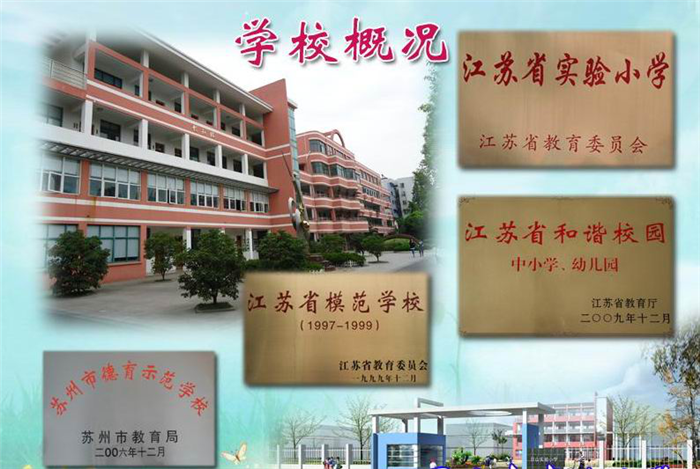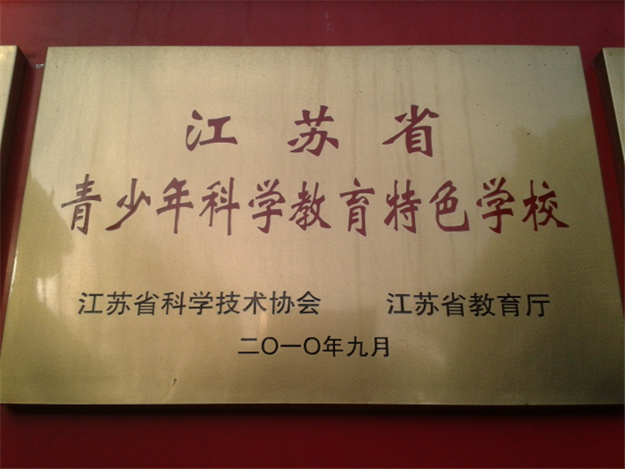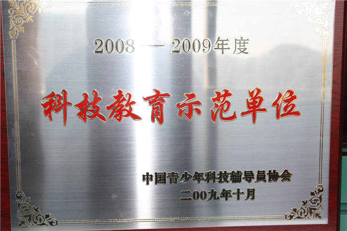
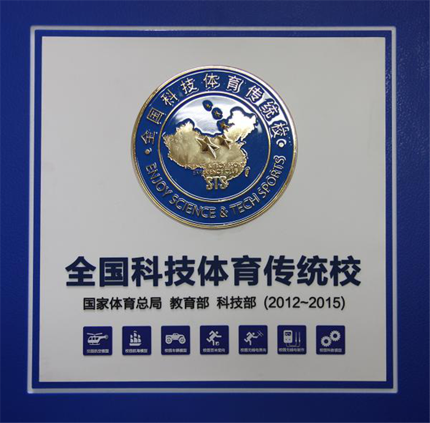
为了适应社会的发展，满足学生的成长需求，学校在传承和创新的基础上，坚持实施素质教育，努力探索“智慧教育”，着力打造“智慧实小”办学品牌。学校致力于学生核心素养的培养，以“做一个智慧的人”为育人目标，努力培养学生“会思考、善质疑，会实践、善创新，会生活、善交往，会修身、善担当”，促进学生全面发展。
2.2019-2020大事件：
参与教育部教育装备中心《综合实践》项目：
综合实践活动是新课程的亮点，如何扎实有效地推进这门课程的实施是学校经常思考的一个问题。荣建强校长认为综合实践活动课程项目要与我校校园文化底蕴相结合起来，重视劳动合作、提倡动手实践。为进一步贯彻落实教育部《中小学综合实践活动课程指导纲要》精神，推进教育部《义务教育综合实践活动教学装备配置标准》验证实验项目进程，提高学校综合实践活动课程的整体建设水平，也为综合实践活动课程项目组老师提供一切有利的学习资源，学校选择了物联网,木工两个主题打造综合实践活动教室。期待老师们打破学科界限，整合教育教学模式，利用课余时间加强团队研修，钻研案例，争取培育出德智体美劳全面发展的新时代少年。
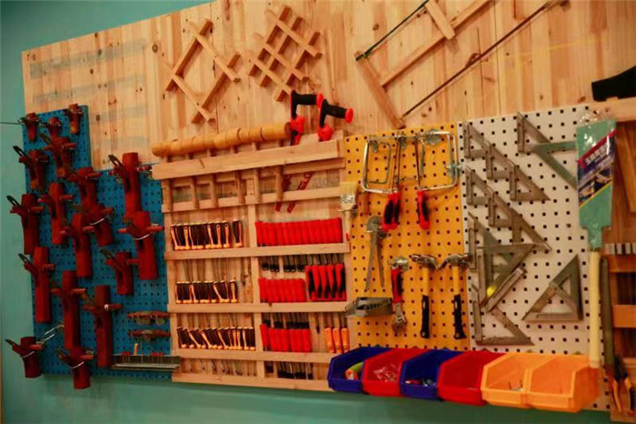
创建木工实践活动专用教室（一）
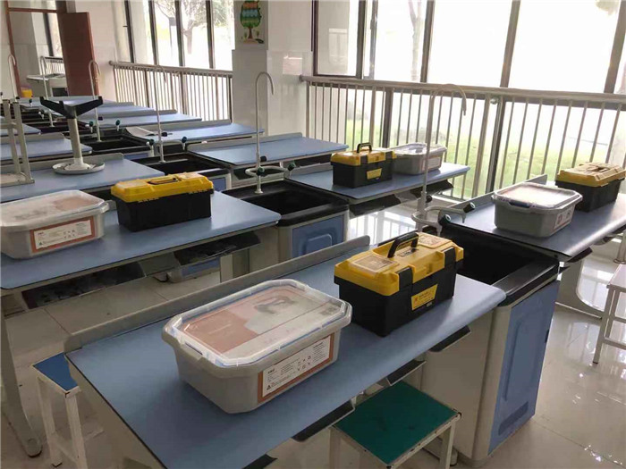
创建木工实践活动专用教室（二）
3.活动过程：
6月3日，因疫情原因，对综合实践活动课程项目组老师进行了线上培训。
培训内容为智能物联的动漫制作和创意木工。老师们认真培训，实践体验了自己所属项目，并展开了热烈的讨论。
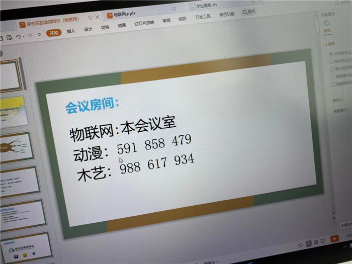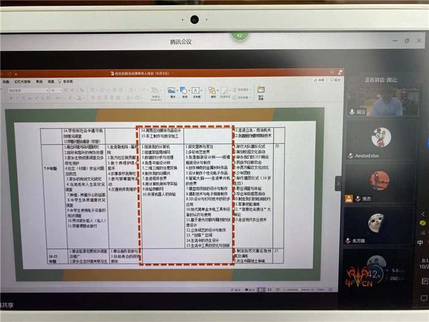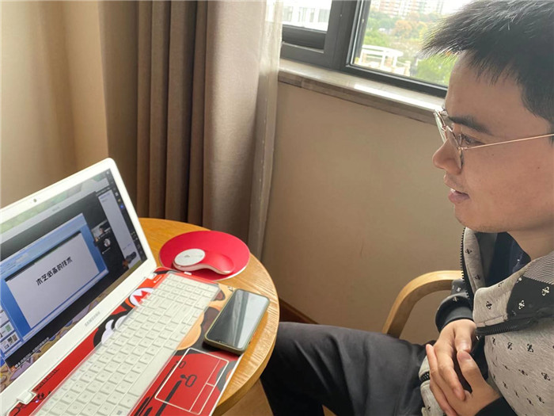
培训结束后，项目负责老师与学生一起进行了探讨与研究的实践活动。
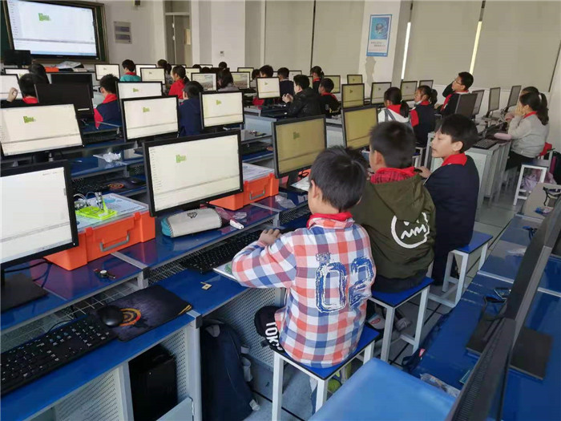
智能物联活动现场
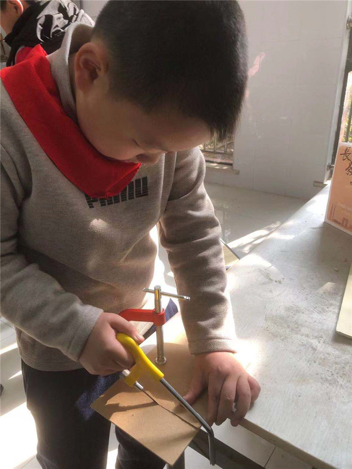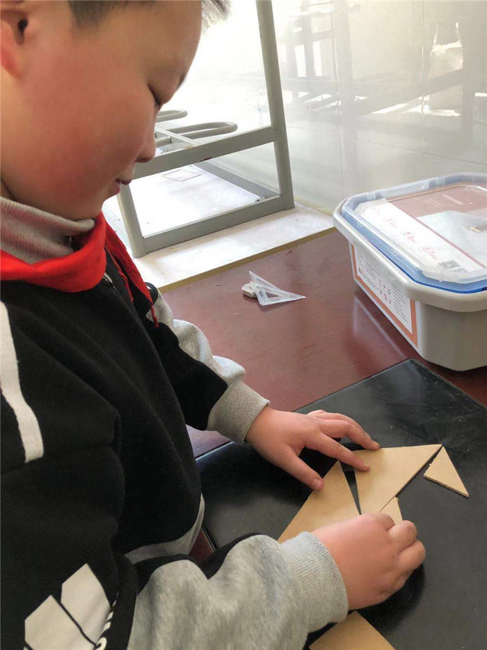
木工活动现场